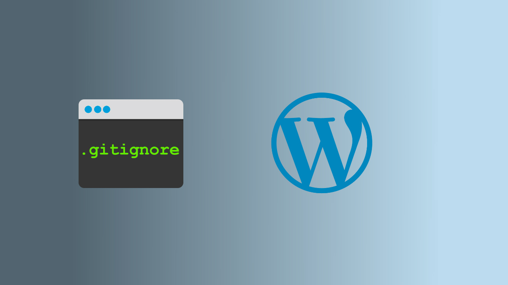

.gitignore для WordPress
 Сергей Мочалов
Сергей Мочалов
При разработке веб-приложений работу без использования Git уже не возможно представить. Сложно выдумать что то более рациональное для контроля версий. А история коммитов позволяет проследить весь процесс разработки конкретного проекта во времени.
При разработке шаблонов для WordPress также часто используется git, т.к. процесс разработки достаточно длительный.
Предположим что мы инициализировали репозиторий в корне нашего проекта через git init.
Но как оградить вашу папку с темой (ведь нам нужно закоммитить именно ее) от остальных файлов WordPress: ядра и прочих файлов идущих с дистрибутивом, а также прочих плагинов? Естественно при помощи .gitignore
Ниже пример .gitignore для стандартной инсталляции WordPress
# -----------------------------------------------------------------
# .gitignore for WordPress @salcode
# ver 20160309
#
# From the root of your project run
# curl -O https://gist.githubusercontent.com/salcode/b515f520d3f8207ecd04/raw/.gitignore
# to download this file
#
# By default all files are ignored. You'll need to whitelist
# any mu-plugins, plugins, or themes you want to include in the repo.
#
# To ignore uncommitted changes in a file that is already tracked, use
# git update-index --assume-unchanged
#
# To stop tracking a file that is currently tracked, use
# git rm --cached
#
# Change Log:
# 20160309 Added favicon files as whitelisted files
# 20150302 Added composer.json as a whitelisted file
# 20150227 Created as fork of https://gist.github.com/salcode/9940509,
# this version ignores all files by default
# -----------------------------------------------------------------
# ignore everything in the root except the "wp-content" directory.
/*
!wp-content/
# ignore everything in the "wp-content" directory, except:
# mu-plugins, plugins, and themes directories
wp-content/*
!wp-content/mu-plugins/
!wp-content/plugins/
!wp-content/themes/
# ignore all mu-plugins, plugins, and themes
# unless explicitly whitelisted at the end of this file
wp-content/mu-plugins/*
wp-content/plugins/*
wp-content/themes/*
# ignore all files starting with . or ~
.*
~*
# ignore node dependency directories (used by grunt)
node_modules/
# ignore OS generated files
ehthumbs.db
Thumbs.db
# ignore Editor files
*.sublime-project
*.sublime-workspace
*.komodoproject
# ignore log files and databases
*.log
*.sql
*.sqlite
# ignore compiled files
*.com
*.class
*.dll
*.exe
*.o
*.so
# ignore packaged files
*.7z
*.dmg
*.gz
*.iso
*.jar
*.rar
*.tar
*.zip
# -------------------------
# BEGIN Whitelisted Files
# -------------------------
# track these files, if they exist
!.gitignore
!.editorconfig
!README.md
!CHANGELOG.md
!composer.json
# track favicon files, if they exist
!android-chrome-*.png
!apple-touch-icon*.png
!browserconfig.xml
!favicon*.png
!favicon*.ico
!manifest.json
!mstile-*.png
!safari-pinned-tab.svg
# track these mu-plugins, plugins, and themes
# add your own entries here
!wp-content/mu-plugins/example-mu-plugin/
!wp-content/plugins/example-plugin/
!wp-content/themes/example-theme/